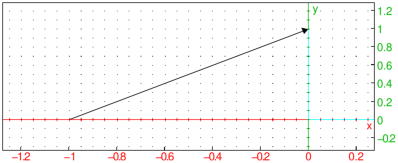
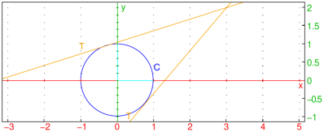

24.11.3 Parabola in the plane
For parabolas in space, see Section 25.9.4.
The parabola
command draws parabolas and other conic sections.
parabola can take parameters in two different ways.
-
parabola can take one argument:
eqn, a second degree equation in the variables x
and y (or an expression which will be set to zero).
- parabola(eqn) returns and draws
the conic section given by the equation eqn.
- Alternatively, parabola can take two arguments:
F,V, two points, or
-
A=(a,b), a point.
- c, a real number.
- parabola(F,V) returns and draws the parabola with
focus F and vertex V.
- parabola(A,c) returns and draws the parabola
y=b+c(x−a)2.
Examples

